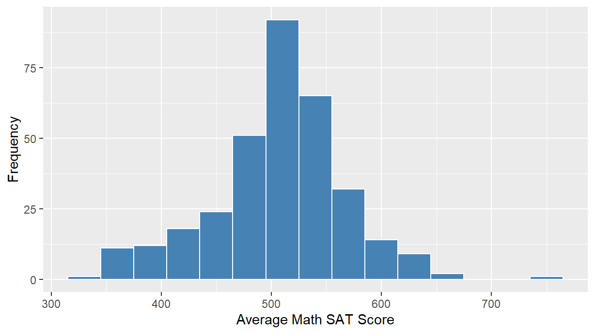
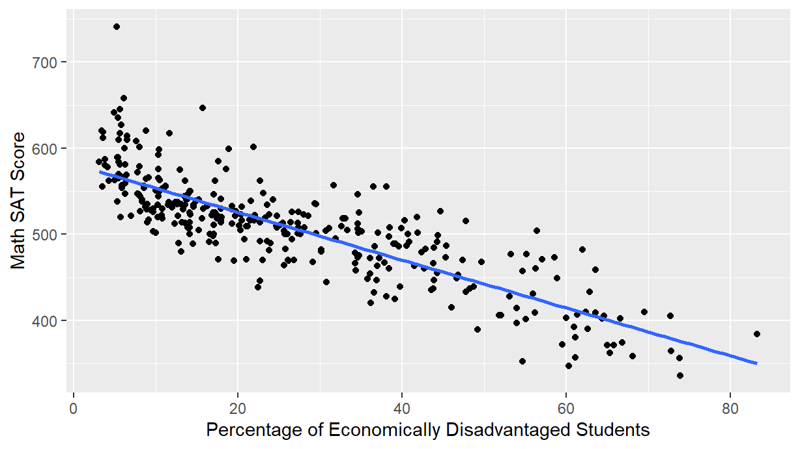
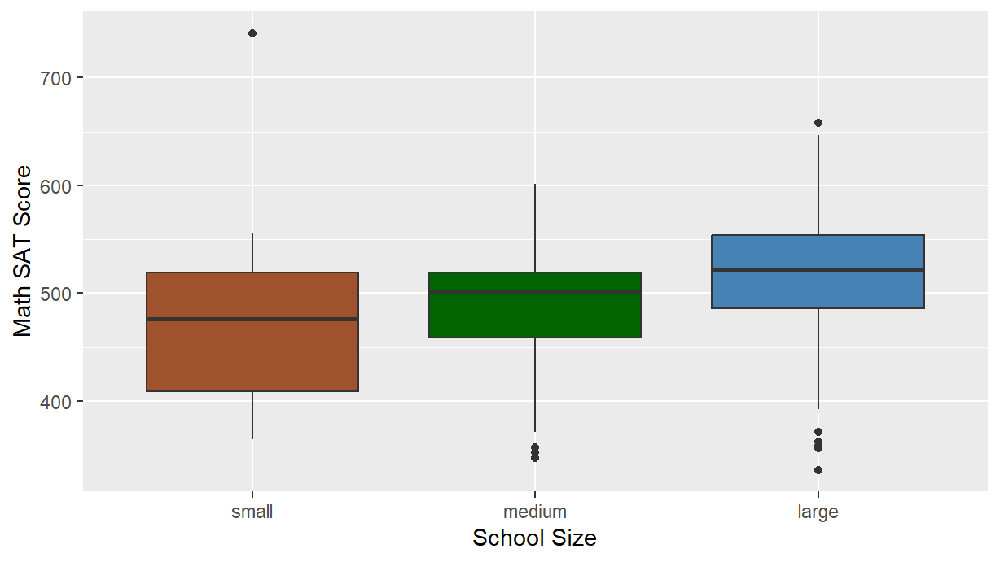
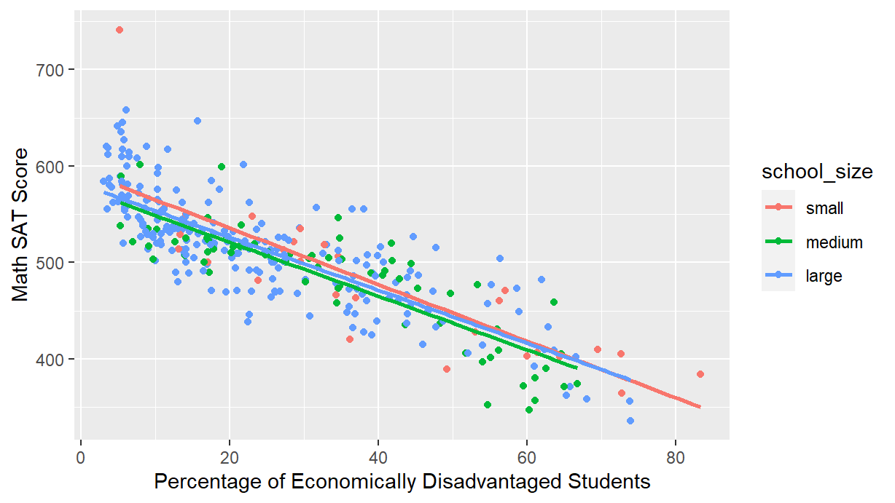
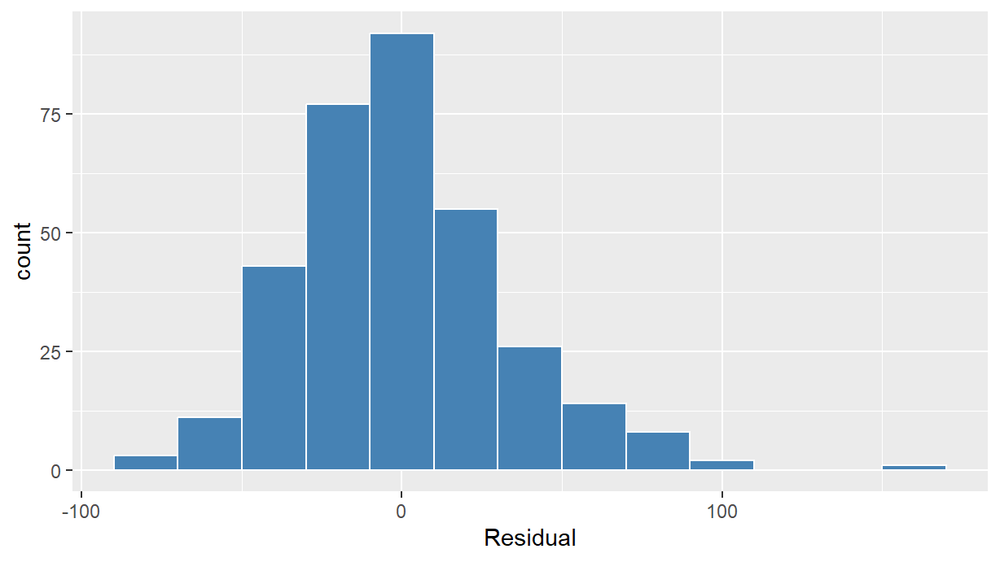
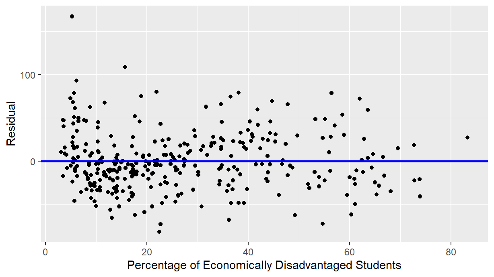
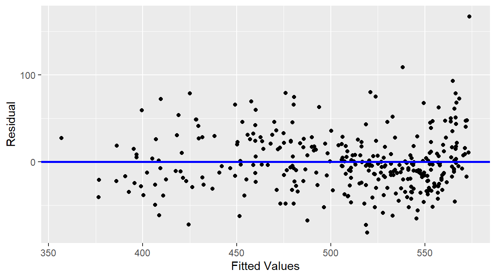
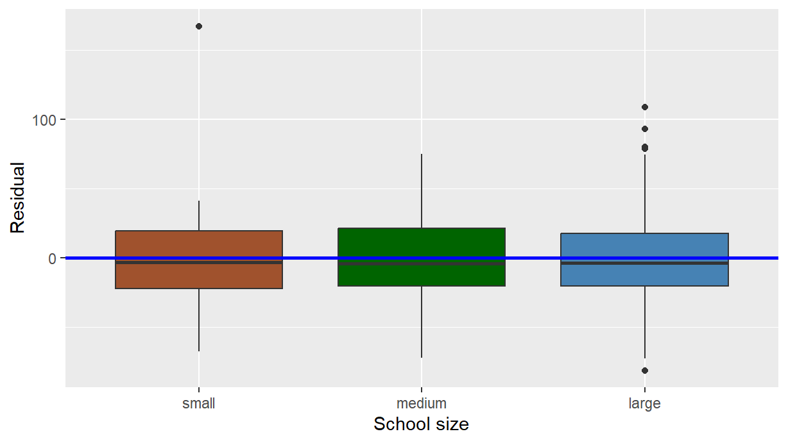

Predictive Factors of Math SAT Score in Massachusetts Public and Charter High Schools

1. Introduction
Many schools in the US are failing1. This study aims to better understand how school conditions influence student performance. The SATs are an important part of many high school senior’s college application, and represent one measure of student performance. Our project investigates whether factors such as the percentage of economically disadvantaged students in a school and school size are related to student performance, as measured by a schools’ average SAT score.
To address this question, we used a data set from Kaggle that compiled information on public and charter schools in the state of Massachusetts from several Massachusetts Department of Education reports2. The data was last updated in August of 2017. Each case in the data set is a school. Although this data set includes schools with grades K-8, we only focused on high school with 11th and 12th grades, as these are the grades in which students typically take SAT scores.
Unfortunately, the data does not contain overall SAT scores, only averaged Math and Verbal and Writing SAT scores for each school. After doing an exploratory data analysis, we saw that these three sub-types demonstrated similar trends. Therefore, we decided to focus solely on the Math SAT score (out of 800 points) as our outcome variable in order to make this report more concise. We included two explanatory variables in this analysis: the percent of students in a school that are considered economically disadvantaged, and school size, with three levels, “small” (< 342 students), “medium” (342-541 students), and “large” (> 541 students).
Here is a snapshot of 5 randomly chosen rows of the data set we’ll use:
# A tibble: 5 × 4
school_name average_sat_math percen…¹ schoo…²
<chr> <dbl> <dbl> <fct>
1 Joseph Case High 539 21.6 medium
2 Nauset Regional High 530 17.9 large
3 A North Central Charter Essential (District) 507 31.1 medium
4 Pathfinder Vocational Technical 432 36.6 large
5 Boston Community Leadership Academy 431 56 medium
# … with abbreviated variable names ¹percent_economically_disadvantaged,
# ²school_size2. Exploratory data analysis
We had an original sample size of 390 high schools. However since 58 of these had missing SAT scores, we dropped these from consideration. Unfortuanately, no information was provided as to why some schools had missing values and most didn’t, so we cannot comment on the impact dropping these missing cases has on our results.
Our total sample size was 332 (Table 1). The mean of the average SAT scores was greatest for large schools (n = 238, \(\bar{x}\) = 517.5, sd = 56.2), intermediate for medium schools (n = 74, \(\bar{x}\) = 483.3, sd = 58.7), and lowest for small schools (n = 78, \(\bar{x}\) = 478.0, sd = 77.4). In MA in 2017, the average percentage of economically disadvantaged students in schools was 31 % (sd = 21.74),
The percentage of students that were considered economically disadvantaged ranged from 3.1% to a shockingly high 93.9% (\(\bar{x}\) = 31.6, sd = 21.7).
Table 1. Summary statistics of average Math SAT scores for small, medium and large high schools in the State of Massachusetts in 2017.
# A tibble: 3 × 7
school_size n mean median sd min max
<fct> <int> <dbl> <dbl> <dbl> <dbl> <dbl>
1 small 28 478. 476 77.4 364 741
2 medium 69 483. 502 58.7 347 601
3 large 235 518. 521 56.2 336 658Looking at the distribution of Average Math SAT score in Figure 1, it does not appear to be skewed and thus we did not apply any transformations. We did notice a potential outlier around a score of 750, which is something to consider throughout our analysis.

In Figure 2, we generated a scatterplot to see the overall relationship between our numerical outcome variable Math SAT score and our numerical explanatory variable percentage of economically disadvantaged students. As the percentage of economically disadvantaged students increased, there was an associated decrease in Math SAT score. Consistent with this relationship is this is negative correlation coefficient of -0.83.

Looking at Figure 3, which displays the relationship between our numerical outcome variable Math SAT score and our categorical explanatory variable school size, the Math SAT scores look to be the greatest at larger schools, and the lowest at smaller schools, though the difference does not seem to be extreme. Furthemore, there appear to be some potential outliers. In particular, there is one small school with a very high average SAT score. Small schools also have the largest variation in Math SAT scores as evidenced by the largest interquartile range.

Finally, we generated a colored scatterplot displaying the relationship between all three variables at once in Figure 4. While this plot corresponds to an interaction model where we allow for each regression line corresponding to each school size to have a different slope, we observe that the slopes appear to be fairly similar, and thus the regression lines are roughly parallel. The additional complexity of the interaction model model thus appears to not be warranted, and thus we will favor the simpler “parallel slopes” model in our regression analysis.

3. Multiple linear regression
3.1 Methods
The components of our multiple linear regression model are the following:
- Outcome variable \(y\) = Average Math SAT score
- Numerical explanatory variable \(x_1\) = Percentage of students who are economically disadvantaged
- Categorical explanatory variable \(x_2\) = School size
where the unit of analysis is high school, given that each row in our dataset corresponds to a unique high school. As discussed earlier, we did not include an interaction effect because the slopes appear to be reasonably parallel in Figure 4.
3.2 Model Results
Table 2. Regresstion table of parallel slopes model of average Math SAT as a function of percentage of economically disadvantaged student and school size.
# A tibble: 4 × 7
term estim…¹ std_e…² stati…³ p_value lower…⁴ upper…⁵
<chr> <dbl> <dbl> <dbl> <dbl> <dbl> <dbl>
1 intercept 588. 7.61 77.3 0 573. 603.
2 percent_economically_disadvan… -2.78 0.106 -26.1 0 -2.99 -2.57
3 school_size: medium -11.9 7.54 -1.58 0.115 -26.7 2.91
4 school_size: large -6.36 6.92 -0.919 0.359 -20.0 7.26
# … with abbreviated variable names ¹estimate, ²std_error, ³statistic,
# ⁴lower_ci, ⁵upper_ci3.3 Interpreting the regression table
The regression equation for Math SAT score is the following:
\[ \begin{aligned}\widehat {score} =& b_{0} + b_{prct} \cdot prct + b_{med} \cdot 1_{is\ med}(x_2) + b_{large} \cdot 1_{is\ large}(x_2) \\ =& 588.190 - 2.777 \cdot prct - 11.913 \cdot 1_{is\ med}(x_2) - 6.362 \cdot 1_{is\ large}(x_2) \end{aligned} \]
- The intercept (\(b_0\) = 588.190) represents the Math SAT score when zero percent of the students are said to be economically disadvantaged and the school size is small (Table 2).
- The estimate for the slope for percent economically disadvantaged (\(b_{prct}\) = -2.777) is the associated change in average Math SAT score depending on the percentage of economically disadvantaged students. Based on this estimate, for every one percentage point increase in the percent of economically disadvantaged students in a school, there was an associted decrease in Math SAT scores of on average 2.777 points.
- The estimate for sizeMedium (\(b_{med}\) = -11.913) and sizeLarge (\(b_{large}\) = -6.36) are the offsets in intercept relative to the baseline group’s, sizeSmall, intercept (Table 2). In other words, on average medium schools score 11.913 points lower than small schools while large schools scored on average 6.362 lower.
Thus the three regression lines have equations:
\[ \begin{aligned} \text{Small schools (in red)}: \widehat {score} =& 588.190 - 2.777 \cdot prct\\ \text{Medium schools (in green)}: \widehat {score} =& 576.277 - 2.777 \cdot prct\\ \text{Large schools (in blue)}: \widehat {score} =& 581.828 - 2.777 \cdot prct \end{aligned} \]
3.4 Inference for multiple regression
Using the output of our regression table we’ll test two different null hypotheses. The first null hypothesis is that there is no relationship between the percentage of economically disadvantaged students and Math SAT score at the population level (the population slope is zero).
\[\begin{aligned} H_0:&\beta_{prct} = 0 \\\ \mbox{vs }H_A:& \beta_{prct} \neq 0 \end{aligned}\]
There appears to be a negative relationship between the percent of economically disadvantaged students and mean SAT score for schools \(b_{prct}\) = -2.77. Furthermore, this appears to be a meaningful relationship since in Table 2 we see
- the 95% confidence interval for the population slope \(\beta_{prct}\) is (-2.986, -2.568), entirely on the negative side
- the p-value \(p < 0.001\) is rather small, so we reject the null hypothesis \(H_0\) that \(\beta_{prct} = 0\) in favor of the alternative \(H_A\) that \(\beta_{prct}\) is indeed not 0 and negative.
So taking into account potential sampling variation in results (for example if we collected similar data but for a different year or for a different nearby state for example) the relationship does appear to be negative.
The second set of null hypotheses that we are test are that all the differences in intercept for the non-baseline groups (medium and large schools) are zero.
\[ \begin{aligned} H_0:& \beta_{med} = 0\\ \mbox{vs }H_A:& \beta_{med} \neq 0 \end{aligned} \] and \[ \begin{aligned} H_0:& \beta_{large} = 0\\ \mbox{vs }H_A:& \beta_{large} \neq 0 \end{aligned} \]
In other words “is the intercept for the small schools equal to the intercepts for the medium schools or not?” As well as “is the intercept for the small schools equal to the intercepts for the large schools or not?” While both observed differences in intercept were negative (\(b_{med}\) = -11.913 and \(b_{large}\) = -6.362) we observe in Table 2 that
- the 95% confidence intervals for the population difference in intercept \(\beta_{med}\) and \(\beta_{large}\) both include 0: (-26.736, 2.909) and (-19.981, 7.258) respectively. So it is plausible that the difference of both intercepts are zero, hence it is plausible that all intercepts are the same.
- The respective p-values are fairly large (0.115 and 0.359), so we fail to reject both null hypothesis that they are 0.
So it appears the differences in intercept are not meaninfully different from 0, and hence all three intercepts are roughly equal. This consistent with our observations from the visualization of the three regression lines in Figure 4.
3.5 Residual Analysis
We conducted a residual analysis to see if there was any systematic pattern of residuals for the statistical model we ran. Because if there are systematic patterns, then we cannot fully trust our confidence intervals and p-values above.




The model residuals were normally distributed, though there was one potential outlier (Fig. 5). There are not any systematic patterns to either of the scatterplots (Fig 6 & 7). There is, however, one clear outlier around 5% in Figure 6 and at a very high mean SAT score in Figure 7. The boxplots show a very even spread of residuals at each school size, and similar values across the different school sizes. However, there is again, one particularly extreme outlier in the small school group (Fig. 8). We conclude that the assumptions for inference in multiple linear regression are well met. However, it might be worthwhile to look at whether the outlier with the very high scoring small school (MA Academy for Math and Science School) had a very large influence on the conclusions.
4. Discussion
4.1 Conclusions
We found that there was no significant difference in Math SAT scores at different sized schools, but that as the percentage of economically disadvantaged students increased, the scores decreased significantly. On average, Math SAT scores decreased by on average 3 points for every one unit increase in the percentage of economically disadvantaged students. This however does not necessarily mean that economic disadvantage causes lower test scores, merely that they are associated. We were surprised to find that school size did not have a significant influence on SAT scores. We expected to see higher SAT scores in small schools, assuming that students could get more one-on-one attention from teachers.
Overall, these results suggest that the economic well being of families is a factor in academic success. Our findings are consistent with previous studies showing that found wealth is correlated to SAT scores in the US3. In order to mitigate this, we believe that there should be more support systems in schools with higher percentages of economically disadvantaged students. These could include free SAT prep courses or college readiness programs. Furthermore, programs that help remove barriers to education (transportation, hunger, etc.) may benefit overall student learning, and outcomes. The trends found in this analysis are important because SAT scores are a factor for college acceptances, which in our current society is a often a prerequisite for higher paying jobs.
4.2 Limitations
There were several limitations to this data set. For one, 58 out of the 390 high schools were missing SAT score data. A close inspection revealed that these were mostly small schools in which less than five students took the SAT. Furthermore, these data only for the state of Massachusetts in 2017. As such, our scope of inference is limited to Massachusetts; it may not be appropriate to generalize the results found to the country as a whole. Massachusetts has been ranked #1 for public school systems by multiple sources including Forbes, and this may affect the trends seen in the data relative to other states4. Additionally, a low score on the Math subsection is not necessarily indicative of a low total SAT score. However, since total SAT scores were not included in this data set, this was not a measure we could look at. Finally, standardized test results and graduation rates were the only measures of student success in this data set. We chose SAT scores as our outcome variable for this study due to this limitation. However, we recognize that standardized testing is not likely the best indicator of student success and intelligence. Not every school requires their students to take the SAT and these tests are expensive, which can act as a barrier for some students.
4.3 Further questions
If we were to continue researching this topic, we would like to work with a data set that includes total SAT score instead of just the sub-type scores. This would give us a better idea of the students’ performance. It would be ideal to use a data set also includes several years worth of data so that we can see if the trends shown persist from year to year. Finally, it would be interesting to incorporate other explanatory variables, particularly ones that policy makers could address through funding programs or laws. The results from this sort of study could be given to the state of Massachusetts so they can make more informed decisions about their schools.
Since our results strongly suggest that money is correlated to success on the SAT, it would be interesting to investigate the distribution of federal and state funding to public and charter schools in the state of Massachusetts.
We would also like to expand from just Massachusetts to other states across the country to get a broader view of the United States public education system. Massachusetts is a leader in education5. Many states are very different from Massachusetts and therefore could yield different results than what we found in this project.
5. Citations and References
Footnotes
Strauss, Valerie. What the numbers really tell us about America’s public schools. Washington Post, March 2017. _https://www.washingtonpost.com/news/answer-sheet/wp/2017/03/06/what-the-numbers-really-tell-us-about-americas-public-schools/?noredirect=on&utm_term=.d9a5b415678d↩︎
Dalziel, Nigel. Massachusetts Public Schools Data. Kaggle, Aug. 2017. Web. 19 Oct. 2018. https://www.kaggle.com/ndalziel/massachusetts-public-schools-data↩︎
Goldfarb, Zacchary. These four charts show how the SAT favors rich, educated families. Washington Post. March 2014. https://www.washingtonpost.com/news/wonk/wp/2014/03/05/these-four-charts-show-how-the-sat-favors-the-rich-educated-families/?noredirect=on&utm_term=.aac2fb6c0f32↩︎
Morad, Renee. States With The Best Public School Systems Forbes, Forbes Magazine, August 2018, https://www.forbes.com/sites/reneemorad/2018/07/31/states-with-the-best-public-school-systems/#649330883897↩︎
Reis, Jacqueline. Massachusetts Students Score among World Leaders on PISA Reading, Science and Math Tests. Department of Education News, December 2016. http://www.doe.mass.edu/news/news.aspx?id=24050↩︎